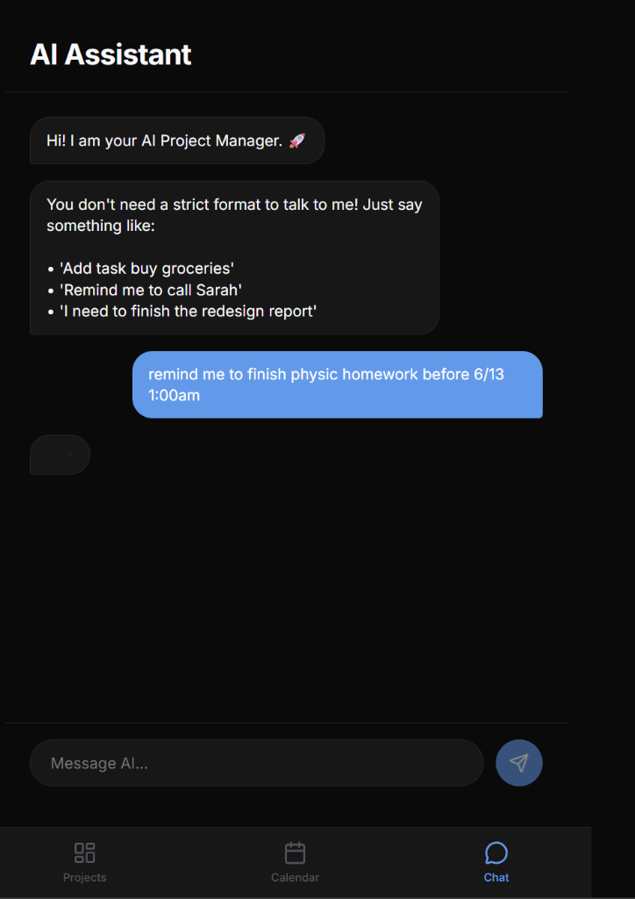

Project workspaces
Completion summaries and collapsible task groups bring local checklist status into a phone-friendly view.
I kept my engineering checklists on my computer, but needed them when I was away. I built OmniSync to bring that progress onto my phone, alongside tasks and deadlines.
Engineering tasks lived in local Markdown files, while coursework and deadlines lived in separate mobile apps. I wanted to check project progress away from the workstation without maintaining a second checklist.
I built a dashboard that shows desktop progress on my phone and keeps new cloud tasks alongside it. I can check what remains before planning the next work session, without copying the checklist into another app.

Completion summaries and collapsible task groups bring local checklist status into a phone-friendly view.
A client-side parser extracts task details, dates, and project names, with follow-up questions for missing information.
Month and day views place scheduled tasks alongside the rest of the day’s commitments.
The desktop process reads configured project files and sends structured task summaries to Firestore. The mobile client listens for updates. This lets the phone read a cloud copy without connecting directly to the workstation.
Desktop-origin tasks are read-only in the mobile interface. Cloud-created tasks are editable, but the prototype does not write mobile changes back into local Markdown files.
A chat request referring to “drone” could create a second project instead of attaching to the existing drone workspace. I added alias matching against existing workspaces and checked both cloud projects and synced workspaces before creating another card.
The reported check was to add a motor-test task using the nickname and confirm it appeared in the existing project. Similar project names remain an ambiguity the parser must resolve.
A deadline entered as 24:00 did not match a day-view grid indexed from 0 through 23. The prototype maps that input to 23:59 so it remains visible on the intended date. That display convention is a tradeoff, rather than an exact midnight representation.

I defined the local-to-cloud data flow, built the sync daemon and React views, implemented project alias reconciliation and calendar handling, and tested the desktop-to-mobile workflow.
Built with AI pair-programming support for scaffolding, parser drafts, and debugging; my work included refining matching behavior and verifying boundary cases.
Local checklist synchronization, cloud task creation, project grouping, calendar views, and a conversational scheduling parser.
Local-file writeback, push notifications, user authentication, and broader language understanding. The current parser uses client-side rules and a state machine, rather than a cloud LLM.